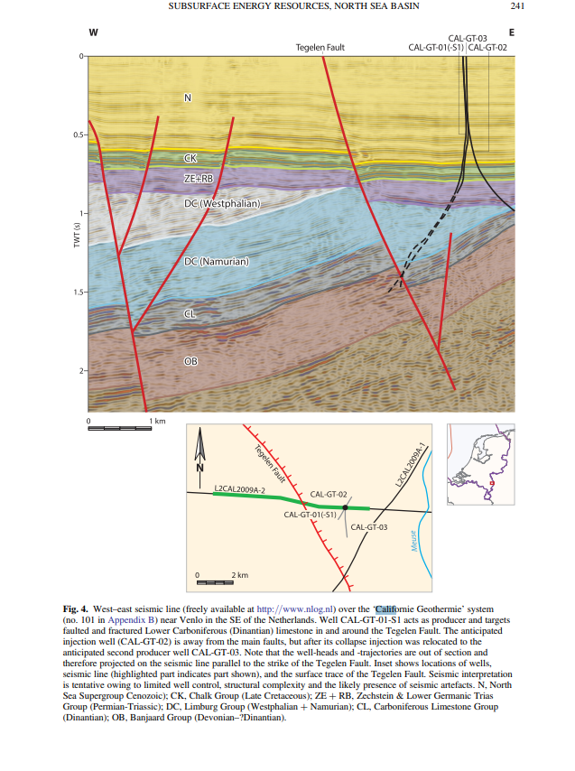

Exercise Part 1. Exploring Someren from Californië
1. CAL-GT-04 at Californië The well tops on the section, and drilling time, temperature and gamma ray (below 815 m) in the well panel 2. Pick the Houthem toward Someren Clicks on the section add points to a Houthem pick, from the well at Californië westward across the fault zone 3. An attribute along the Houthem pick The attribute that changes most at the top of the chalk at CAL-GT-04, on the section and along the pick from Californië to Someren 4. A SOM from the attributes chosen at Californië The four attributes that change most at the top of the chalk, skipping near-duplicates, go to Build a SOM 5. Where the Californië Houthem classes occur Only the SOM classes of the Houthem samples at CAL-GT-04 are shown along the line 6. SHAP Which attributes place samples in those classes 7. Reveal the Someren well The well inside the license, its Houthem top compared with the pick, and the SOM classes at the well
Picking is on: clicks on the section add points. Dragging a box still zooms.
Snap each point to snapping
No snapping Nearest peak (positive amplitude) Nearest trough (negative amplitude) Nearest zero crossing
Remove last point Clear pick
Done picking
Part 2. Well logs after the reveal
Available after the reveal.
1. Zeeland against Epen at CAL-GT-04 The producing carbonate and the shale above it, split by a gamma ray cutoff, and the attributes that measure interval character separating them 2. Lithology or depth? The same samples with a straight-line trend with time removed from gamma ray and from each attribute 3. Gamma ray classes from the Someren to the Boom members ASTEN-GT-02, where gamma ray changes little with time; the cutoff slider sets the classes 4. Porosity over the whole logged interval Density porosity against RMS amplitude, colored by two-way time; the averaging window slider changes the scale of the logs 5. Porosity with the trend removed The same samples after a straight-line trend with time is subtracted 6. The well tie Logs and tops moved 8 ms down; the tie shift slider moves them up to 16 ms either way 7. Two attributes and a polygon Spectral ratio against far minus near, colored by class; a polygon marks the same combination along the whole line 8. Attributes chosen at the well, into the SOM The four attributes that separate the classes most, skipping near-duplicates, go to Build a SOM 9. The Houthem Formation The target at both wells, where the logs run out
Geologic setting
Each event outlines where it can be seen on SCAN029.
Carboniferous → Permian Variscan uplift and erosion; Zechstein rests on Namurian shale at Californië (Base Permian unconformity) Late Cretaceous Inversion of the Roer Valley Graben; at Californië, Maastricht chalk rests on the Lower Buntsandstein Paleocene–Eocene → Oligocene Erosion at the base of the Oligocene; in the graben the Oligocene rests on the Paleocene, and the whole Eocene is missing Late Oligocene → present Graben subsidence along the Peel Boundary Fault, with up to 1000 m of throw and up to 2000 m of Cenozoic fill Dinantian Carbonate platform; karst and fracture permeability produce warm water at Californië
An asterisk (*) on a formation name marks a candidate geothermal reservoir.

Interpreted line L2CAL2009A-2 across the Californië wells and the Tegelen Fault, a different line from SCAN029. Doornenbal et al. (2019), Geological Society, London, Special Publications 494, fig. 4. CC BY 4.0.
Logs and crossplots
SCAN029 is a 2D line with relative, not absolute, acoustic impedance. There are no shear or sonic logs and the wells are tied with processing velocities, CAL-GT-04 lies 0.5–1.4 km from the line with gamma ray measured while drilling (LWD), and most attributes are averaged over 140 m and 62 ms, the scale of seismic facies. There is no inversion, Vp/Vs, intercept or gradient here, so the tool does not compare attributes with QI results; it shows how attributes can be tested against well logs before they are used alongside them.
ASTEN-GT-02 CAL-GT-04
Horizontal axis: attribute
Vertical axis: log
Vertical axis: attribute
Point color
Point color: log
Samples from
Gamma ray cutoff: classes
Log averaging window: averaging
Tie shift: 0 ms tie
trend
Click on the crossplot to add polygon corners; click the first corner again to close it.
Clear polygon Remove last corner
Overlay opacity
Bars are colored by what each attribute measures .
Correlation with the log Help me read this plot
Use the crossplot attributes in the SOM
Reading the well panel Reading the crossplot
SHAP
Train a SOM in Build a SOM first.
Global SHAP: how far each attribute moves samples across the map Help me read this plot
Mean SHAP magnitude over 400 random samples, as a fraction of the map width. Axis fixed at 0–0.3.
Local SHAP: one sample
Click the section to explain a sample
Help me read this plot
Help me read this plot
The path starts at the average position of all samples and adds each attribute's SHAP value in turn, largest first, ending at the sample's position on the map.
Refine and compare
Change the attributes and run again
Change the set after reading the SHAP values, then train a second SOM in the same window.
Chosen: none yet
Neurons
4 (2 × 2) 9 (3 × 3) 16 (4 × 4)
25 (5 × 5) 36 (6 × 6) 64 (8 × 8) 100 (10 × 10)
Window:
Train the SOM again
Someren prospect
The well inside the license is hidden until the reveal step of the exercise.
ASTEN-GT-02, drilled in 1987, lies 0.1 km from the line inside the license. Its tops, from the 2021 TNO revision, are placed in two-way time with the migration velocities.
Overlay opacity
Show all neurons Hide all neurons